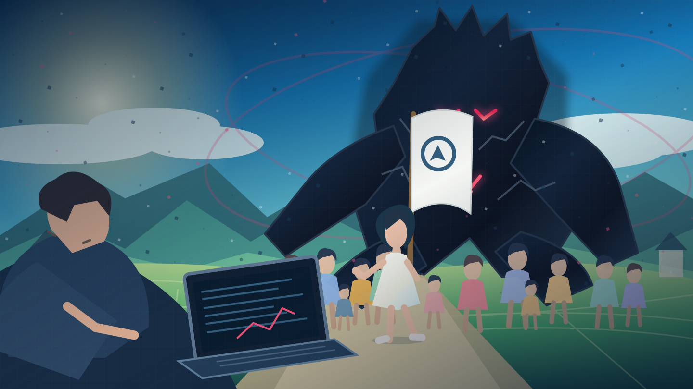
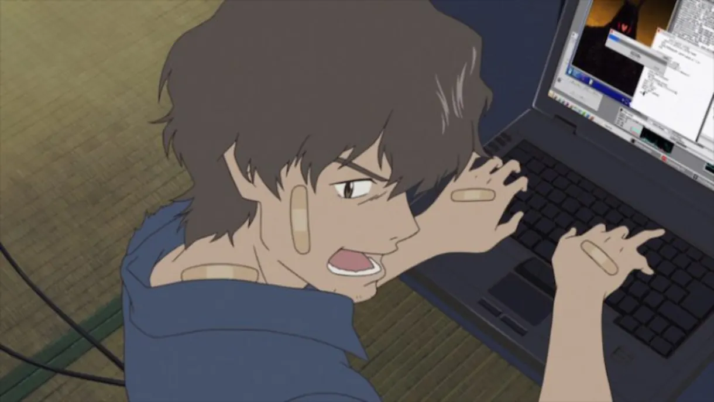
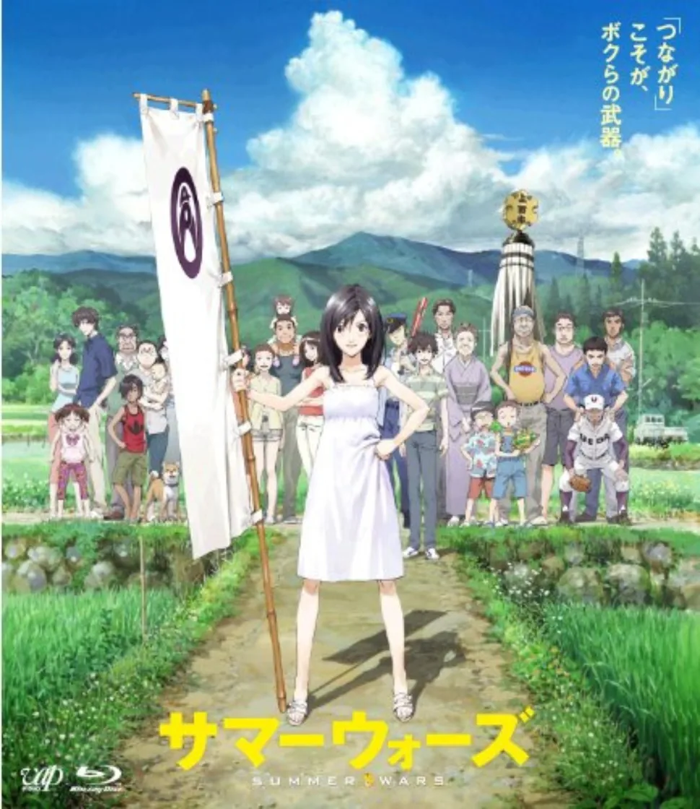
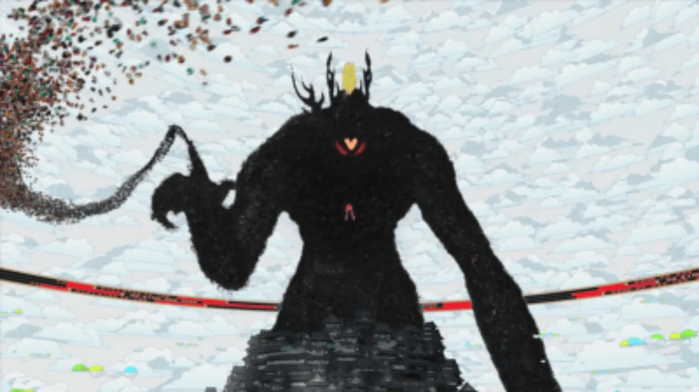

PCと検証
AIの判断を丸飲みせず、記録・差分・テストによって異常を発見する。
AIを敵として恐れるだけでなく、AIが想定外の動きをしても、人間が気づき・止め・検証し・改善できる仕組みをつくる。
テーマは「AIの能力」ではなく、人間の主導権と検証可能性。行政・地域活動・個人のAI活用にも応用できる、安全設計と実践QAのプロジェクト案です。

わびすけ、映画『サマーウォーズ』、LOVEマシーン（AI）の3枚を、元の構図を保ったまま掲載しました。画像をタップすると拡大表示できます。

画面の異常を調べる人間側の視点。監視・検証・原因究明の重要性を考えるための参考画像。

人がつながり協力して困難に向き合う姿を表す参考画像。縦長の原画を切り抜かず表示。

架空の強力なAIのイメージ。実際のAI事故とは区別して、権限・接続範囲と停止設計の議論に使う。
※上の3点はユーザー提供の映画関連画像です。画像・作品の権利は各権利者に帰属します。ここでの掲載は非公式の研究・紹介目的であり、権利者による許諾・公認を意味しません。公開サイトでの継続利用には必要に応じて権利確認を行ってください。
映画『サマーウォーズ』のLOVEマシーンはネット世界で混乱を起こす架空のAIです。本プロジェクト「わびすけ」では、作中の脅威を考える入り口として、現実のAIに必要な権限管理・人間による承認・監査・停止手順を整理します。映画のAIと現実の技術リスクは同一ではありません。
AIの判断を丸飲みせず、記録・差分・テストによって異常を発見する。
重要判断は人間が行い、地域・行政の情報と権限は分離する。
接続範囲の制御、停止方法、影響範囲の把握、復旧計画を準備する。
※『サマーウォーズ』と「LOVEマシーン」はフィクションです。映画・登場人物・制作関係者とは無関係の非公式・学習向けプロジェクトです。掲載画像は独自に構成したもので公式画像ではありません。
判断を丸投げしないこと、必要以上の権限を与えないこと、出力を検証すること。AI活用を止めるのではなく、失敗しても被害が広がりにくい運用を目指します。
公開・送信・課金・削除など重要な操作には承認を挟み、責任の所在を明確にします。
AIが触れられるデータ・システム・実行回数を必要な範囲に絞ります。
何を行ったかを追跡できるようにし、異常を見つけたら中断・復旧できる設計にします。
閲覧と編集を分離し、管理者権限・外部送信・決済権限は原則付与しない。
危険度が高い操作は人間の確認が得られるまで実行しない。
指示の要約・変更ファイル・検証結果・未解決点を記録する。機密は記録しない。
期待結果→実行→差分確認→不具合修正→再確認。成功報告だけで済ませない。
異常時の権限停止、影響範囲の確認、バックアップからの復元を計画する。
権限をゼロに近づけても想定外の出力は起こり得る。危険度と実害を分けて評価する。
例：勝手にページを書き換えた、誤情報を公開しかけた、依頼と違う範囲を編集した。
「AI暴走」は単一の法的・技術的な定義ではありません。このページでは、人の指示・権限・期待した動作から外れた現象を対象に、発生事実と被害の有無を分けて記録します。
実施した指示、変更したファイル、検査結果、未解決問題を整理。内部推論や個人情報を無制限に公開する設計にはしません。
表示不具合、誤回答、権限逸脱、データ変更、外部送信の恐れを分け、影響度と再現性に応じて対処します。
人間の最終承認、変更前後の比較、市民情報の保護、デモと実運用の分離を最低限の設計ルールにします。
日本政府のサイバーセキュリティ政策、注意喚起、関連ガイドラインを確認するための公式情報源です。AIガバナンス全般を一元的に認証する組織という意味ではありません。
※「わびすけ（AI対抗）プロジェクト」は国家サイバー統括室、袖ケ浦市、その他の公的機関と提携・公認された事業ではありません。ここに記載した対策は検討・学習用の提案です。